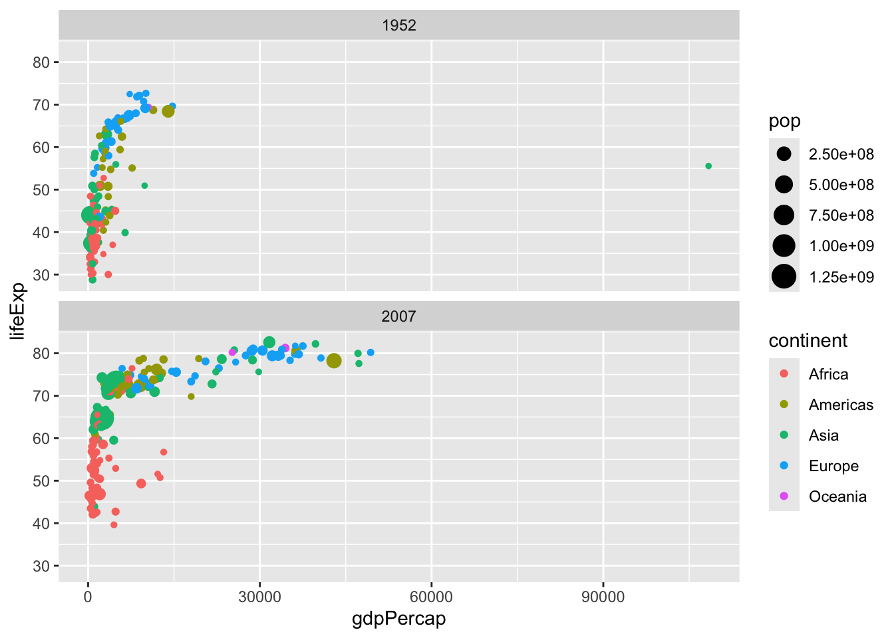
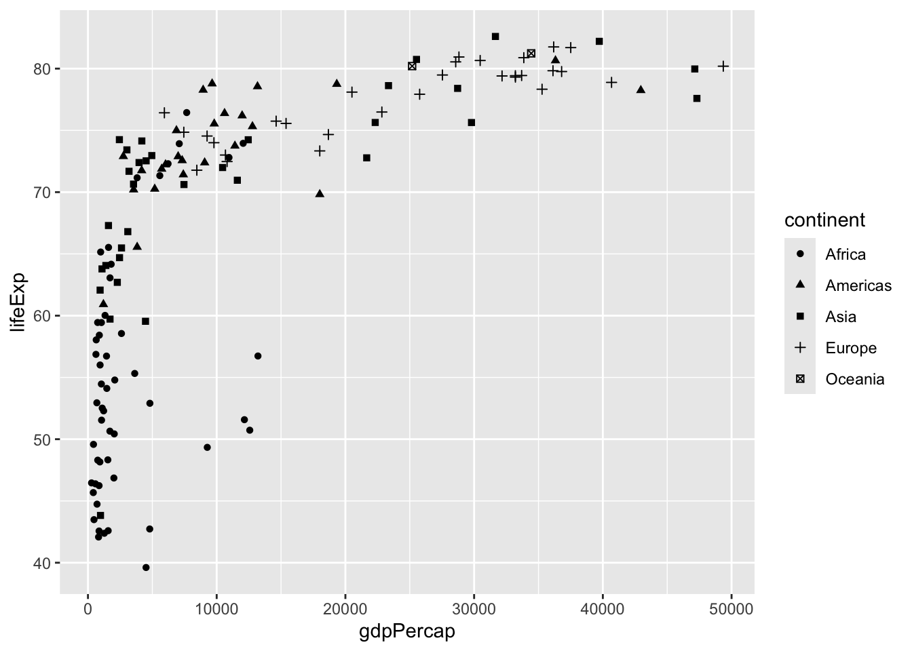
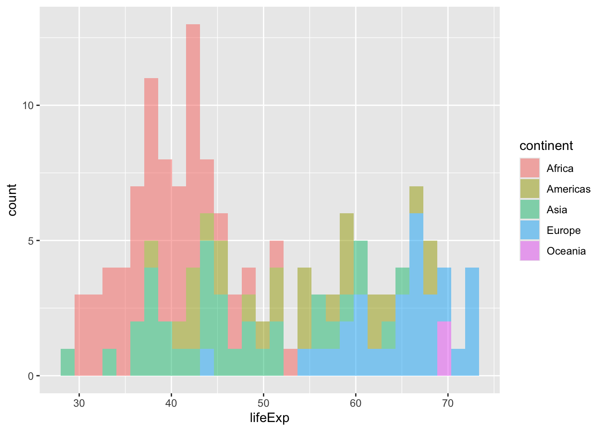
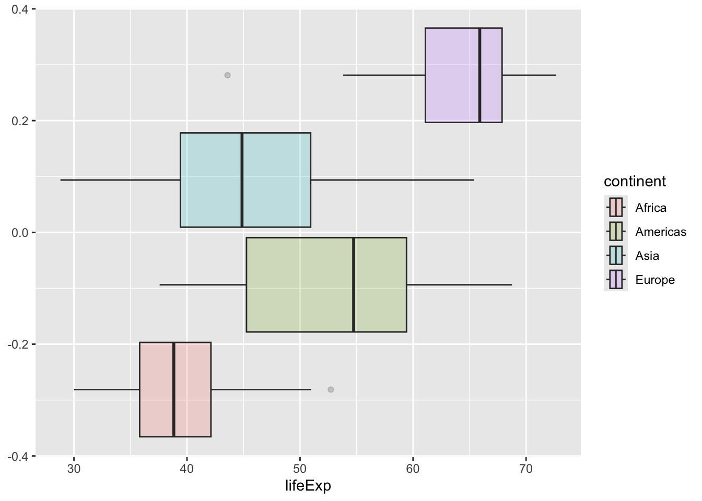
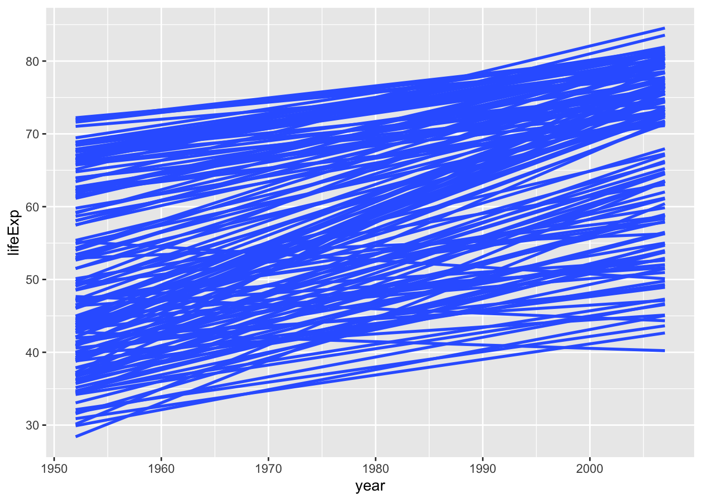
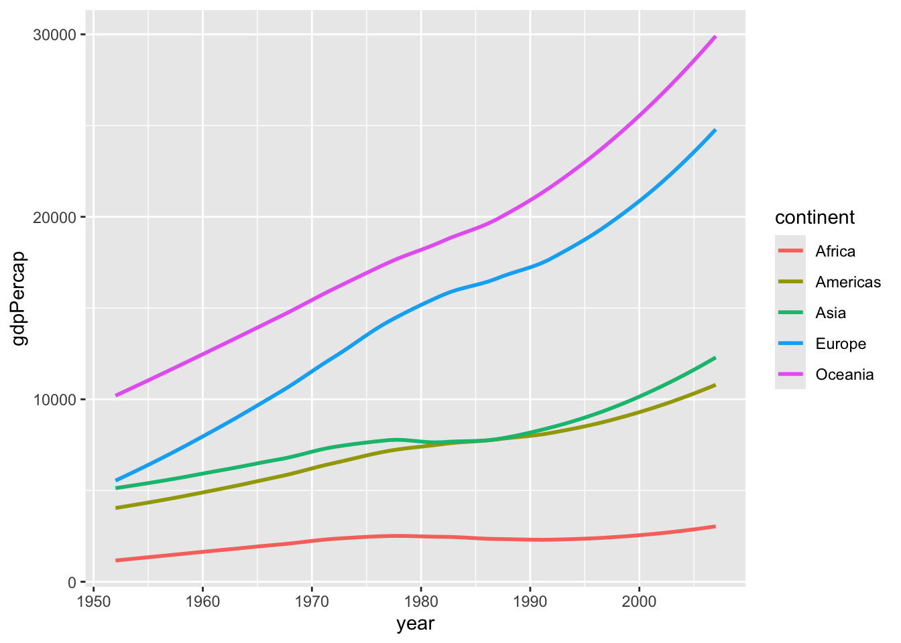
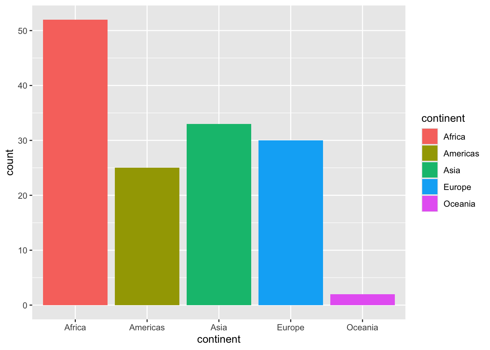
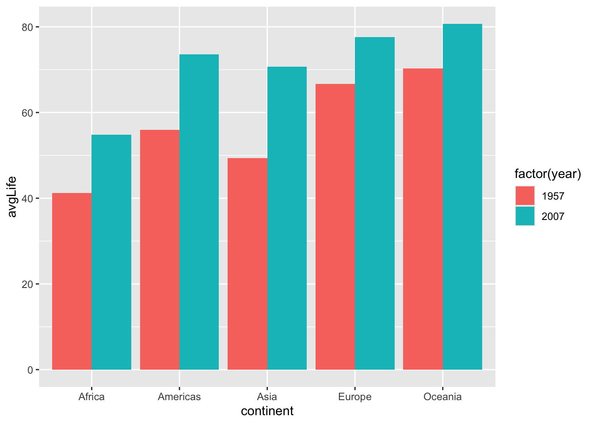
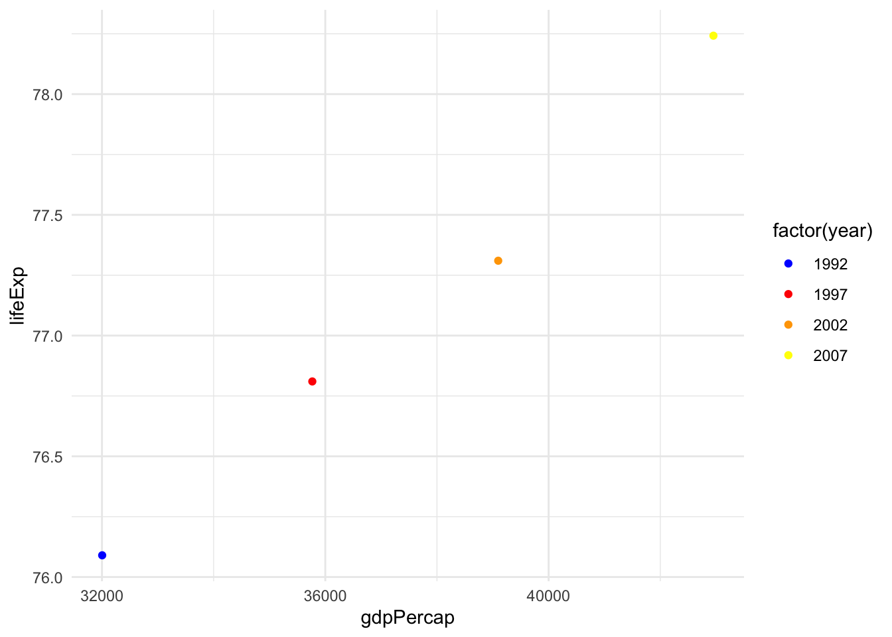
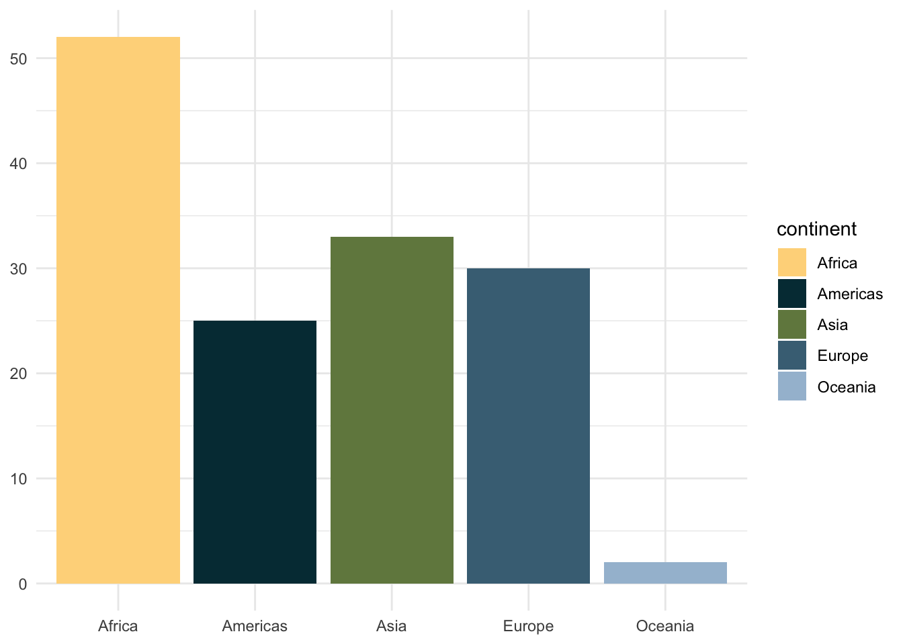

library(paletteer)
library(ggplot2)
library(gapminder)
library(tidyverse)gapminder %>%
filter(
year %in% c(1952, 2007)
) %>%
ggplot() +
aes(x = gdpPercap) +
aes(y = lifeExp) +
geom_point() +
aes(color = continent) +
aes(size = pop) +
facet_wrap(vars(year),
nrow = 2)
gapminder %>%
filter(year == 2007) %>%
ggplot()+
aes(x=gdpPercap,
y=lifeExp,
shape=continent)+
geom_point()
gapminder %>%
filter(year == 1952) %>%
ggplot()+
aes(x=lifeExp,
fill=continent)+
geom_histogram(alpha=0.5)## `stat_bin()` using `bins = 30`. Pick better value with `binwidth`.
gapminder %>%
filter(year == 1952,
continent !='Oceania') %>%
ggplot()+
aes(x=lifeExp,
fill=continent)+
geom_boxplot(alpha=0.2)
gapminder %>%
ggplot()+
aes(x=year,
y=lifeExp,
group=country)+
geom_smooth(
method = 'lm',
se = FALSE
)## `geom_smooth()` using formula = 'y ~ x'
gapminder %>%
ggplot()+
aes(x=year,
y=gdpPercap,
color=continent)+
geom_smooth(se=FALSE)## `geom_smooth()` using method = 'loess' and formula = 'y ~ x'
gapminder %>%
filter(year==2007) %>%
group_by(continent) %>%
summarise(count=n()) %>%
ggplot()+
aes(x=continent,
y=count,
fill=continent)+
geom_col()
gapminder %>%
filter(year %in% c(1957,2007)) %>%
group_by(continent,year) %>%
summarise(avgLife = mean(lifeExp)) %>%
ggplot()+
aes(x=continent,
y=avgLife,
fill=factor(year))+
geom_col(position='dodge')## `summarise()` has grouped output by 'continent'. You can override using the `.groups` argument.
p = gapminder %>%
filter(country == 'United States', year > 1990) %>%
ggplot()+
aes(gdpPercap, lifeExp)+
geom_point()
p=p+aes(color=factor(year))
p=p+scale_color_manual(
values =
c('1992'='blue',
'1997'='red',
'2002'='orange',
'2007'='yellow')
)+
theme_minimal()
p
# scale_colour_paletteer_d("nationalparkcolors::Acadia")
# scale_color_paletteer_d("nationalparkcolors::Acadia")
# scale_fill_paletteer_d("nationalparkcolors::Acadia")
# paletteer_d("nationalparkcolors::Acadia")
gapminder %>%
filter(year==2007) %>%
group_by(continent) %>%
summarise(count=n()) %>%
ggplot()+
aes(x=continent,
y=count,
fill=continent)+
geom_col()+
scale_fill_paletteer_d("nationalparkcolors::Acadia") +
labs(x = NULL, y = NULL) +
theme_minimal()